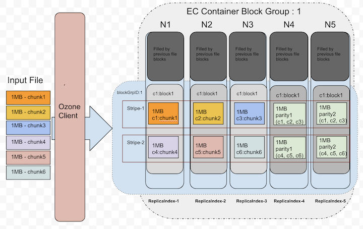

Ozone Erasure Coding
Background
Distributed systems basic expectation is to provide the data durability.
To provide the higher data durability, many popular storage systems use replication
approach which is expensive. The Apache Ozone supports RATIS/THREE replication scheme.
The Ozone default replication scheme RATIS/THREE has 200% overhead in storage
space and other resources (e.g., network bandwidth).
However, for warm and cold datasets with relatively low I/O activities, additional
block replicas rarely accessed during normal operations, but still consume the same
amount of resources as the first replica.
Therefore, a natural improvement is to use Erasure Coding (EC) in place of replication,
which provides the same level of fault-tolerance with much less storage space.
In typical EC setups, the storage overhead is no more than 50%. The replication factor of an EC file is meaningless.
Instead of replication factor, we introduced ReplicationConfig interface to specify the required type of replication,
either RATIS/THREE or EC.
Integrating EC with Ozone can improve storage efficiency while still providing similar
data durability as traditional replication-based Ozone deployments.
As an example, a 3x replicated file with 6 blocks will consume 6*3 = 18 blocks of disk space.
But with EC (6 data, 3 parity) deployment, it will only consume 9 blocks of disk space.
Architecture
The storage data layout is a key factor in the implementation of EC. After deep analysis and several technical consideration, the most fitting data layout is striping model. The data striping layout is not new. The striping model already adapted by several other file systems(Ex: Quantcast File System, Hadoop Distributed File System etc) successfully before.
For example, with the EC (6 data, 3 parity) scheme, the data chunks will be distributed to first 6 data nodes in order and then client generates the 3 parity chunks and transfer to remaining 3 nodes in order. These 9 chunks together we call as “Stripe”. Next 6 chunks will be distributed to the same first 6 data nodes again and the parity to remaining 3 nodes. These 9 data nodes stored blocks together called as “BlockGroup”.
If the application is continuing to write beyond the size of 6 * BLOCK_SIZE, then client will request new block group from Ozone Manager.
Erasure Coding Write
The core logic of erasure coding writes are placed at ozone client.
When client creates the file, ozone manager allocates the block group(d + p)
number of nodes from the pipeline provider and return the same to client.
As data is coming in from the application, client will write first d number of chunks
to d number of data nodes in block group. It will also cache the d number chunks
to generate the parity chunks. Once parity chunks generated, it will transfer the
same to the remaining p nodes in order. Once all blocks reached their configured sizes,
client will request the new block group nodes.
Below diagram depicts the block allocation in containers as logical groups. For interest of space, we assumed EC(3, 2) Replication Config for the diagram.

Let’s zoom out the blockID: 1 data layout from the above picture, that showed in the following picture. This picture shows how the chunks will be layed out in data node blocks.

Currently, the EC client re-used the data transfer end-points to transfer the data to data nodes.
The XceiverClientGRPC client used for writing data and putBlock info.
The datanode side changes are minimal as we reused the same existing transfer protocols.
The EC data block written at the datanode is same as any other block in non-EC mode.
In a single block group, container id numbers are same in all nodes. A file can have multiple block groups.
Each block group will have d+p number of block and all ids are same.
d - Number of data blocks in a block group
p - Number of parity blocks in a block group
Erasure Coding Read
For reads, OM will provide the node location details as part of key lookup. If the key is erasure coded, Ozone client reads it in EC fashion. Since the data layout is different(see the previous section about write path), reads should consider the layout and do the reads accordingly.
The EC client will open the connections to DNs based on the expected locations. When all data locations are available, it will attempt to do plain reads chunk by chunk in round robin fashion from d data blocks.
Below picture shows the order when there are no failures while reading.

Until it sees read failures, there is no need of doing EC reconstruction.
Erasure Coding On-the-fly Reconstruction Reads
When client detects there are failures while reading or when starting the reads, Ozone EC client is capable of reconstructing/recovering the lost data by doing the EC decoding. To do the EC decoding it needs to read parity replicas. This is a degraded read as it needs to do reconstruction. This reconstruction is completely transparent to the applications.
Below picture depicts how it uses parity replicas in reconstruction.

Erasure Coding Replication Config
Apache Ozone built with the pure ‘Object Storage’ semantics. However, many big data eco system projects still uses file system APIs. To provide both worlds best access to Ozone, it’s provided both faces of interfaces. In both cases, keys/files would be written into buckets under the hood. So, EC Replication Configs can be set at bucket level. The EC policy encapsulates how to encode/decode a file. Each EC Replication Config defined by the following pieces of information:
- data: Data blocks number in an EC block group.
- parity: Parity blocks number in an EC block group.
- ecChunkSize: The size of a striping chunk. This determines the granularity of striped reads and writes.
- codec: This is to indicate the type of EC algorithms (e.g.,
RS(Reed-Solomon),XOR).
To pass the EC Replication Config in command line or configuration files, we need to use the following format: codec-num data blocks-num parity blocks-ec chunk size
Currently, there are three built-in EC Replication Configs supported: RS-3-2-1024k, RS-6-3-1024k, XOR-2-1-1024k.
The most recommended option is RS-6-3-1024k. When a key/file created without specifying the Replication Config,
it inherits the EC Replication Config of its bucket if it’s available.
Changing the bucket level EC Replication Config only affect new files created within the bucket. Once a file has been created, its EC Replication Config cannot be changed currently.
Deployment
Cluster and Hardware Configuration
EC places additional demands on the cluster in terms of CPU and network.
Encoding and decoding work consumes additional CPU on both Ozone clients and DataNodes.
EC requires a minimum of as many DataNodes in the cluster as the configured EC stripe width. For the EC Replication Config RS (6,3), we need
a minimum of 9 DataNodes.
Erasure Coded keys/files also spread across racks for rack fault-tolerance. This means that when reading and writing striped files, most operations are off-rack. Network bisection bandwidth is thus very important.
For rack fault-tolerance, it is also important to have enough number of racks,
so that on average, each rack holds number of blocks no more than the number of EC parity blocks.
A formula to calculate this would be (data blocks + parity blocks) / parity blocks, rounding up.
For RS (6,3) EC Replication Config, this means minimally 3 racks (calculated by (6 + 3) / 3 = 3),
and ideally 9 or more to handle planned and unplanned outages.
For clusters with fewer racks than the number of the parity cells, Ozone cannot maintain rack fault-tolerance,
but will still attempt to spread a striped file across multiple nodes to preserve node-level fault-tolerance.
Due to this reason, it is recommended to setup racks with similar number of DataNodes.
Configurations
EC Replication Config can be enabled at bucket level as discussed above.
Cluster wide default Replication Config can be set with EC Replication Config by using
the configuration keys ozone.server.default.replication.type and ozone.server.default.replication.
<property>
<name>ozone.server.default.replication.type</name>
<value>EC</value>
</property>
<property>
<name>ozone.server.default.replication</name>
<value>RS-6-3-1024k</value>
</property>
Please note, the above configurations will be used only when client does not pass any replication config or bucket does not have any default values.
Setting EC Replication Config On Bucket
We can set the bucket EC Replication Config via ozone sh command. The EC Replication Config options can be passed while creating the bucket.
ozone sh bucket create <bucket path> --type EC --replication rs-6-3-1024k
We can also reset the EC Replication Config with the following command.
ozone sh bucket set-replication-config <bucket path> --type EC --replication rs-3-2-1024k
Once we reset, only newly created keys take effect of this new setting. Prior created keys in the bucket stay with same older setting.
Setting EC Replication Config While Creating Keys/Files
We can pass the EC Replication Config while creating the keys irrespective of bucket Replication Config.
ozone sh key put <Ozone Key Object Path> <Local File> --type EC --replication rs-6-3-1024k
In the case bucket already has default EC Replication Config, there is no need of passing EC Replication Config while creating key.
Enable Intel ISA-L
Intel Intelligent Storage Acceleration Library (ISA-L) is an open-source collection of optimized low-level functions used for storage applications. Enabling ISA-L allows significantly improve EC performance.
Prerequisites
To enable ISA-L you will also require Hadoop native libraries (libhadoop.so).
Installation
Both libraries should be placed to the directory specified by the java.library.path property or set by LD_LIBRARY_PATH environment variable.
The default value of java.library.path depends on the OS and Java version. For example, on Linux with OpenJDK 8 it is /usr/java/packages/lib/amd64:/usr/lib64:/lib64:/lib:/usr/lib.
Verification
You can check if ISA-L is accessible to Ozone by running the following command:
ozone checknative